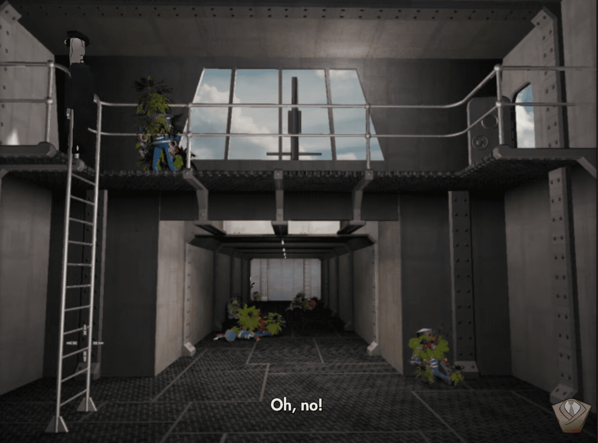
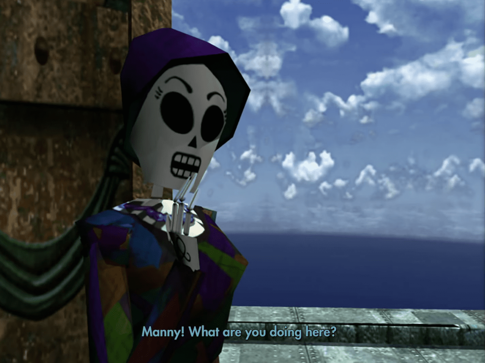
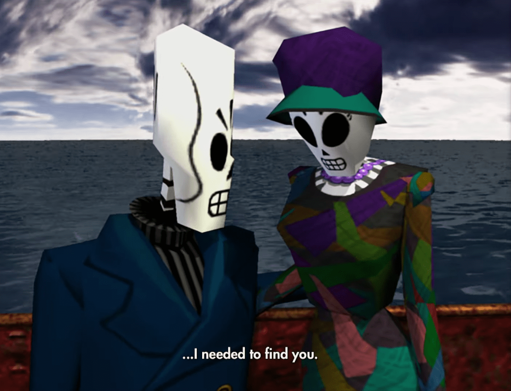

←Tercer año→
¡Levad anclas!
Comienza yendo a la próxima habitación en el barco y baja por la escalera. Después de ver cómo tu tripulación es convertida en brotes, te encerrarán en una habitación con Glottis hasta que descubras la forma de escapar. Primero, presiona el botón en el lado de estribor (derecho) para levantar el ancla. Luego ve a las palancas y gira el barco hacia la derecha. Baja de nuevo el ancla de estribor y luego levántala para unir las anclas. Usa tu guadaña para engancharlas al barco y presiona el botón del lado de babor (izquierdo) para levantar el ancla izquierda y dividir el barco en dos. Usa las palancas para hacer que el barco retroceda y así podrás escapar.
Esta Pequeña Luz Mía
Cuando estés en el fondo del océano, habla con Glottis y luego intenta caminar hacia el borde izquierdo, donde aparecerá Chepito. Háblale para obtener un trofeo (pero no le pidas que te guíe, ya que es una pérdida de tiempo). Finaliza la conversación y luego agárralo cuando pase cerca tuyo y muévete en dirección a Glottis para avanzar. Después de la escena con el pulpo, acércate a la roca en el acantilado a la derecha. Corre alrededor de ella en sentido contrario a las agujas del reloj y Chepito quedará atrapado, permitiéndote avanzar.
¡Dame tu arma!
Entra en el edificio y ve hacia la derecha hasta la oficina principal para ver a Meche y a Domino. Te despertarás con dos angelitos muy molestos. Habla con ellos sobre la construcción de bombillas y que tus manos no son demasiado grandes para obtener un pico pequeño (Little Chipper). Luego ve hacia Meche y mueve su cenicero para fumar justo cuando esté a punto de desechar las cenizas para hacer que se quite su media y sacarla de la basura. Háblale con las primeras opciones de conversación y ella te dirá que le des tu pistola para que pueda confiar en ti. Sal al exterior y ve a la izquierda para ver a Chepito. Dale el Little Chipper y él te dará el martillo neumático Bust All. Luego dale la media de Meche y él te dará una pistola. Ve hacia Meche con la pistola y mira la escena.
Grúa y Cadena
Antes de rescatar a Meche, necesitamos asegurar nuestra salida de la isla. Sal corriendo hacia afuera a la derecha y sube por la cinta transportadora hasta la superficie. Sube a la grúa y ve al lado opuesto donde están las trituradoras y baja la grúa a la playa. Ve hasta la garra de la grúa y úsala en la Bust All para que la grúa solo tenga una cadena gigante ahora. Regresa a la grúa y baja la cadena en las trituradoras y luego levántala para sacar las trituradoras. Mueve la grúa de nuevo al lado opuesto y luego baja la cadena. Ve bajo el agua otra vez y tira de la palanca al lado de la cinta transportadora para que descienda y la cadena cubra la cinta transportadora. Baja por la cadena y verás que Glottis todavía está vivo. Habla con él y vuelve a subir. Tira de la palanca de la cinta transportadora dos veces para que la cadena se enrolle alrededor de la cinta transportadora y el barco debajo. Regresa a la grúa y luego sube la cadena para traer a Glottis y el barco a la superficie.
Rescatando a Meche
Regresa a la oficina y Meche está encerrada tras la bóveda. Usa el Bust All en el costado para exponer la cerradura de la puerta. Ahora necesitas girar la rueda para que haya un pequeño espacio a la derecha de los pasadores y que sea uniforme para todos ellos. Cuando lo tengas configurado, usa tu guadaña en los pasadores y luego abre la puerta. Cierra la puerta y usa tu guadaña en la parte amarilla sobre la puerta. La puerta secreta se abrirá y Meche saldrá. Arrastra el hacha de batalla a la otra habitación. Usa tu guadaña en el sistema de rociadores de arriba y gira la rueda hacia la derecha. Después de que la habitación se inunde, gira la rueda nuevamente y presta atención a qué baldosa drena el agua. Suelta el hacha de batalla sobre esa baldosa y escapa. Para la pelea con Domino, puedes atacarlo varias veces para obtener el trofeo. Cuando lo obtengas, clava tu guadaña en el ojo del pulpo detrás de ti y observa la escena.
